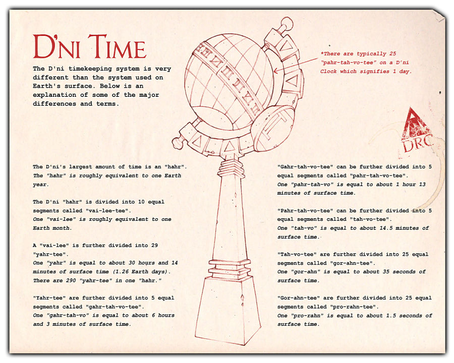

This sheet could be found in the classroom of the neighbourhoods with a clock.

All Myst, Riven and D’ni images and text © Cyan Worlds, Inc. All rights reserved.
No part may be copied or reproduced without express, written permission of Cyan Worlds, Inc.
Assets used with permission.